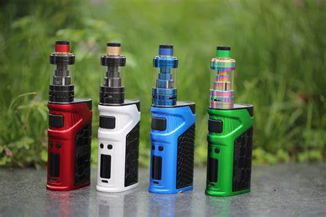
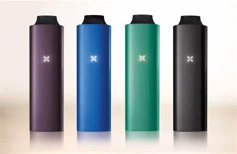

SMOK Vape Pen Nord 22 Starter Kit
SMOK Vape Pen Nord 22 Starter Kit
The SMOK Vape Pen Nord 22 Starter Kit has a capacity of 2000 mAh. All parts of this kit can be detached and reassembled, bringing much more convenience in cleaning and maintenance. The tank is redesigned that gives you a different look and feel, which is paired with two exclusive Nord coils, Nord Mesh 0.6Ω coil perfect for massive vapor and Nord Mesh-MTL 0.8Ω coil offering excellent MTL experience. The pentagon power button is strikingly placed at the upper part of the battery, by holding which you can easily finish the operation of power on/power off and enjoy hassle-free operations.

Price: PHP 1300 - 1500
Freemax Whirlwind
is the most effective marketing vape pen in our on-line vape store. Freemax is renowned for producing incredibly high quality vape containers that create unequaled flavor. With special coil styles, which look fantastic, you simply can’t defeat the kanthal honeycomb mesh coils that come in the Freemax Fireluke 2 tank in this kit. It’s quite a large vape pen which results from the huge 2300mAh battery. The Whirlwind will certainly last for about 150 smokes on a complete fee. The best feature, that our clients enjoy, is the capacity to rapidly readjust the electrical power making use of the dial on the base of the mod. If your in the marketplace for a new vape pen you need to get the Freemax Tornado. You won’t be disappointed. Alternatively, you can read our overview to the most effective vape pens 2019 to see which ones the vaping.com professionals like.
E-Cig Pen Type
A vape pen is a simple and basic vaporizer that is usually an eGo style battery with a fitted clearomizer such as the CE4 clearomizer. The definition of it is more of a broad term, consisting of a long form battery with a tailored tank similar to an appearance of a pen with a larger diameter. The vape pen can be used with e-juices, wax, and essential oils. The eGo-T CE4, the Kangertech eVod, and the Yocan Exgo W1 are some examples of what is consider as a vape pen.
Dry Herb Pen Caliherbs Man
A dry herb vape pen is a cylindrical and pocketable electronic vaporizer for cannabis flowers. Although some are bigger than your average pen, dry herb pens are about the length of a dab pen and smaller than most portable vaporizers. They house an internal and rechargeable battery, plus a self-contained oven that uses conduction heating to vaporize cannabis. Here are the best dry herb vape pens available right now.

Price: PHP 1500 - 1800
Pax vaporizer by Ploom
My local head shop says the Pax Ploom is its top-selling vaporizer, so naturally I wanted to check it out. On first glance, its allure is obvious: The handheld smoking device resembles a bulky iPod player, with a shimmering brushed aluminum case, an indicator light on the front and minimal branding on the back. Not typically swayed by form over function, I found myself immediately attracted to the machine’s sexy Apple-knockoff stylings.